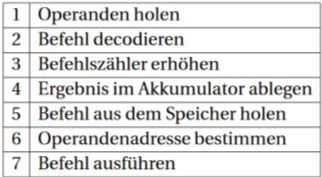

Abitur 2016 IV, Aufgabe 3c
Fragestellung:
Die Ausführung des Befehls div 102 umfasst folgende Schritte:

Ordnen Sie die Schritte geeignet an. Geben Sie dazu die Nummern der Schritte in der entsprechenden Reihenfolge an.
- Operanden holen
- Befehl dekodieren
- Befehlszähler erhöhen
- Ergebnis im Akkumulator ablegen
- Befehl aus den Speicher holen
- Operandenadresse bestimmen
- Befehl ausführen
- Befehl aus den Speicher holen (5)
- Befehl dekodieren (2)
- Operandenadresse bestimmen (6)
- Operanden holen (1)
- Befehl ausführen (7)
- Ergebnis im Akkumulator ablegen (4)
- Befehlszähler erhöhen (3)
- Befehl aus den Speicher holen (5)
- Befehl dekodieren (2)
- Operandenadresse bestimmen (6)
- Operanden holen (1)
- Befehl ausführen (7)
- Ergebnis im Akkumulator ablegen (4)
- Befehlszähler erhöhen (3)
→ Richtige Reihenfolge: 5; 2; 6; 1; 7; 4; 3
→ Richtige Reihenfolge: 5; 2; 6; 1; 7; 4; 3
Abitur 2018 III, Aufgabe 4a
Fragestellung:
Beschreiben Sie einen möglichen Befehlszyklus einer Registermaschine am Beispiel des Maschinenbefehls sub 100
Schritte im Befehlszyklus:
- Fetch
- Decode
- Fetch
- Execute
Schritte im Befehlszyklus:
- Fetch
→ Holen des Befehls aus der Speicher
- Decode
→ Dekodieren des Befehls (Schaltung der ALU)
- Fetch
→ Holen des Operanden aus dem Speicher
- Execute
→ Ausführen des Befehls, Schreiben des Ergebnisses in den Akkumulator
In der Aufgabe:
Beispielbezogen!
- Fetch → Holen des Befehls aus dem Speicher
- Decode → Dekodieren des Befehls;
In diesem Fall: sub
- Fetch → Holen des Operanden aus dem Speicher;
In diesem Fall: 100
- Execute → Ausführen des Befehls; Schreiben des Ergebnisses in den Akkumulator
- Fetch → Holen des Befehls aus dem Speicher
- Decode → Dekodieren des Befehls;
In diesem Fall: sub
- Fetch → Holen des Operanden aus dem Speicher;
In diesem Fall: 100
- Execute → Ausführen des Befehls; Schreiben des Ergebnisses in den Akkumulator
Abitur 2018 IV, Aufgabe 3a
Fragestellung:
Beschreiben Sie einen möglichen Befehlszyklus einer Registermaschine am Beispiel des Maschinenbefehls sub 102
- Fetch → Holen des Befehls aus dem Speicher
- Decode → Dekodieren des Befehls;
In diesem Fall: sub
- Fetch → Holen des Operanden aus dem Speicher;
In diesem Fall: 102
- Execute → Ausführen des Befehls; Schreiben des Ergebnisses in den Akkumulator
- Fetch → Holen des Befehls aus dem Speicher
- Decode → Dekodieren des Befehls;
In diesem Fall: sub
- Fetch → Holen des Operanden aus dem Speicher;
In diesem Fall: 102
- Execute → Ausführen des Befehls; Schreiben des Ergebnisses in den Akkumulator
Fragen:
- Wann wird der Befehlszähler inkrementiert?
- Wie oft wirde der Befehlszähler inkrementiert?